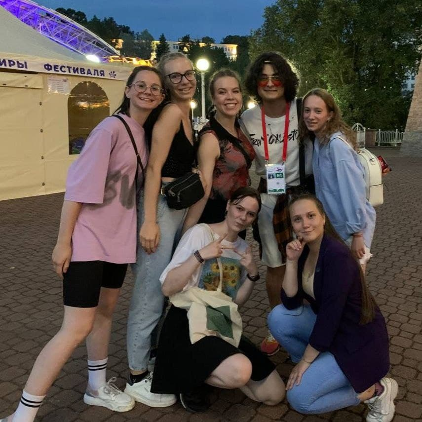
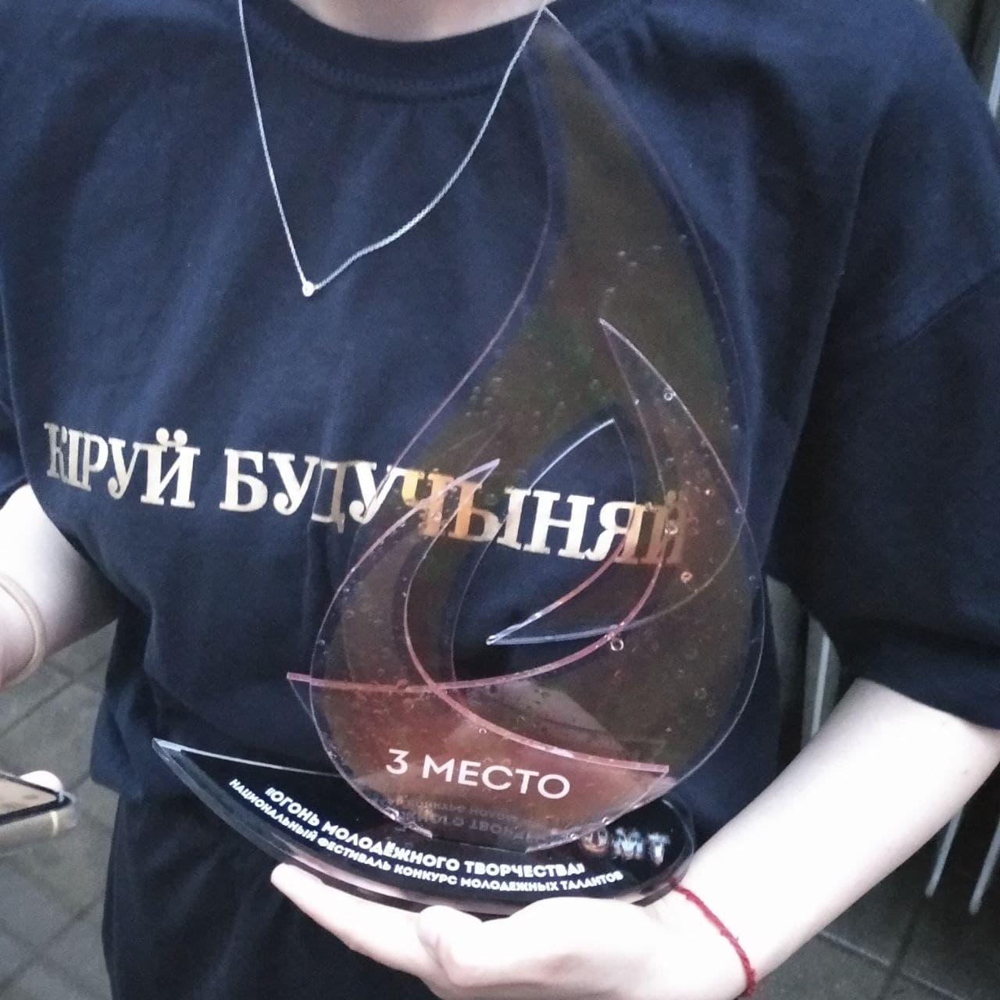

Я даже не представлял, сколько всего произойдет в этом месяце.
Первую его половину я со своим коллективом неустанно готовилась к Славянскому Базару. Когда я первый раз услышала о том, что туда еду, то не смогла поверить своим ушам, однако бескоречные тренировки дали мне понять, что это все реально.
День выступления длился очень долго и я помню каждую его деталь, но пересказ их всех займет очень много времени. Скажу так, я никогда не забуду тех чувств, что охватили меня, когда мы все, певцы и танцоры, вышли на сцену. Когда музыка заиграла, мне уже не было страшно, я знала каждое слово песни, каждое движение танца, и я просто выступала. Это было забавно, но к концу нашего выступления музыка просто-напросто перестала играть. Никто не растерялся, все выглядело так, будто бы и должно было так быть, хотя сердце мое тогда ушло в пятки.
Этот месяц был длинее всех остальных, хотя дней в нем почти столько же, сколько и в других.
